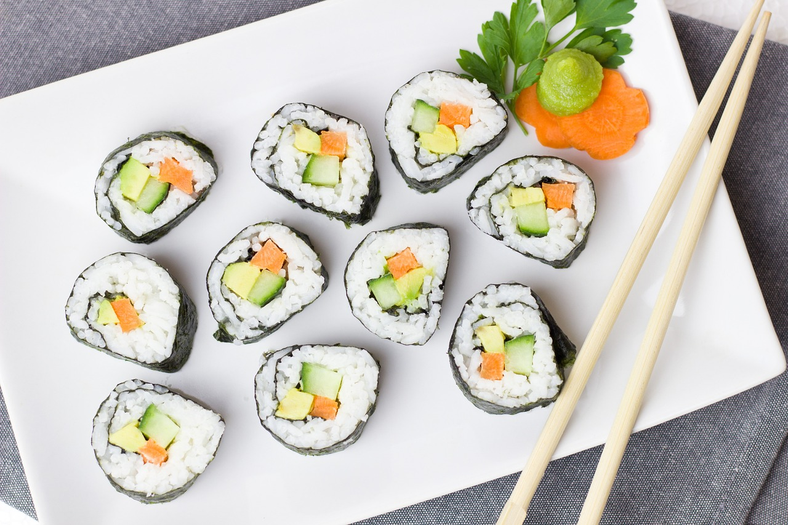

Cucamber Sushi Rolls Recipe

Ingredients:
- 1 cup sushi rice
- 2 tablespoons rice vinegar
- 1 tablespoon sugar
- 1/2 teaspoon salt
- 4 sheets nori (seaweed)
- 1 cucumber, julienned
- Soy sauce, for serving
- Wasabi, for serving
- Pickled ginger, for serving
Instructions
-
Rinse the sushi rice under cold water until the water runs clear.
Combine the rice and 1.2 cups of water in a rice cooker and cook
according to the manufacturer's instructions.
-
In a small saucepan, combine the rice vinegar, sugar, and salt. Cook
over medium heat until the sugar dissolves. Cool to room temperature.
-
Transfer the cooked rice to a large bowl and gently fold in the vinegar
mixture. Allow the rice to cool to room temperature, covered with a damp
cloth.
-
Place a sheet of nori on a bamboo sushi mat. With wet fingers, evenly
spread a thin layer of rice over the nori, leaving about 1/2 inch of
nori uncovered at the top.
-
Arrange a few sticks of cucumber on the rice towards the bottom edge of
the nori sheet.
-
Beginning at the bottom edge, tightly roll the nori and rice over the
fillings using the bamboo mat to help shape the roll. Seal the edge of
the nori with a little water.
-
Using a sharp knife, cut the roll into six equal pieces. Serve with soy
sauce, wasabi, and pickled ginger.